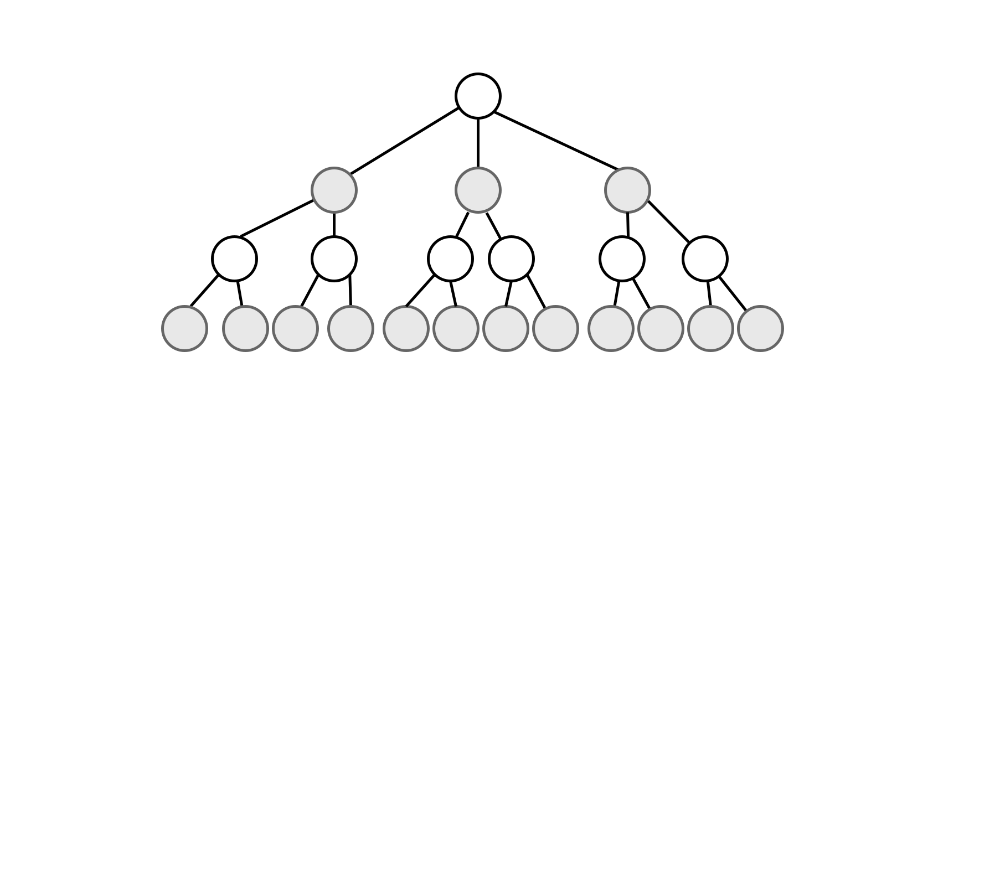

adversarial search and games
adversarial search and games
Strategies and Tactics in Competitive Game Playing
zero-sum games
zero-sum games
Or rather deterministic, two-player, turn-taking, perfect information, zero-sum games.
Zero-Sum Games in AI
- Definition: Zero-sum games are scenarios where gains for one player equate to losses for the other.
Elements
- S0 (Initial State): Sets up the game at the start.
- TO-MOVE(s): Identifies which player is to move in state s.
- ACTIONS(s): The set of legal moves in state s.
- RESULT(s, a): Defines the state resulting from taking action a in state s.
- IS-TERMINAL(s): A test to determine if the game is over.
Outcomes and Utility in Zero-Sum Games
- UTILITY(s, p): Assigns numeric value to a player at game end (e.g., 1 for win, 0 for loss, 0.5 for draw in chess).
- Game Tree: Represents all possible move sequences to terminal states.
- Complexity Range: From simpler games like tic-tac-toe to complex ones like chess.
- (Tic-tac-toe = 9! states = 362,880 states)
- (Chess ≈ 10⁴⁰ states)
Minimax
Minimax
Mastering the Art of Predictive Conquest
Understanding Minimax
- Minimax is a decision rule used in decision-making processes and games, aiming to minimize the possible loss for a worst-case scenario.
- Used extensively in two-player, turn-based games, it considers all possible moves and their outcomes to make the optimal choice.
- Minimax evaluates the game state by assuming that the opponent will also play optimally.
Transition to Alpha-Beta Pruning
- Alpha-Beta Pruning is an enhancement of the Minimax algorithm. It reduces the number of nodes evaluated in the search tree.
- By "pruning" branches that will not influence the final decision, it speeds up the calculation without affecting the outcome.
- Alpha and Beta represent the minimum and maximum scores in the branches being evaluated.
Utility and Evaluation
- A full Minimax calculation, which relies on Utility, is often computationally impractical due to the enormous number of possible game states.
- Instead, we cut off the algorithm at a given depth and use an Evaluation function, which provides a heuristic assessment of the game state's value.
- Evaluation rules:
- Should reflect the strategic value of a game state.
- Need to be computationally efficient (even more in the case of real-time decision-making).
- Must be balanced to avoid biased assessments of the game state.
estimated utility ≈ actual utility
estimated utility ≠ actual utility
Enhancements to Minimax
- Iterative Deepening: conducting successive Minimax searches at
increasing depths.
- Starts with a shallow searchand progressively deepens
- May use earlier results to guide deeper analysis
- Very adaptive to varying time constraints
- Quiescence Search: Extends the search in volatile positions to avoid the 'horizon effect' - situations where a significant change in the game is just beyond the current search limit.
- Forward Pruning: Early elimination of obviously inferior moves to increase search efficiency. Should be used cautiously to avoid missing key moves that could be valuable in a deeper analysis."
Monte Carlo Tree Search
Monte Carlo Tree Search
part 1
Overview
- Monte Carlo Tree Search (MCTS) is an algorithm for making decisions in scenarios that can be represented as a tree of choices.
- It intelligently searches through this tree to identify the most promising moves by simulating potential future events.
- MCTS is commonly used in games and situations where analyzing every possible move is impractical due to their vast number.
Procedure
|
Historical Context
|

|
Monte Carlo Method
Monte Carlo Method
randomness as a guide
Monte Carlo Method
Definition
- Computational technique that uses random sampling to approximate complex mathematical or physical systems.
- Useful in scenarios where analytical solutions are either impossible or difficult to obtain.
Monte Carlo Method
Historical Background
|
J. Robert Oppenheimer (left) and John von Neumann. The latter played a pivotal role in the development of the Monte Carlo Method. |
Monte Carlo Method
Applications
- Finance: Risk assessment and stock market analysis.
- Physics: Modeling complex physical systems, such as climate change patterns and nuclear reactions.
- Computer Graphics: Rendering scenes in movies or video games involving light transport calculations.
- Healthcare: Predicting disease spread.
- and more...
Monte Carlo Method
Example: Approximating π
- Concept:
- Imagine a square with a side length of 1 unit and a quarter circle inside it, touching its edges.
- The area of the quarter circle is π/4, and the area of the square is 1.
- Procedure:
- Randomly scatter a large number of points across the square.
- Count the number of points that fall inside the quarter circle.
- Calculation:
- The ratio of points inside the circle to the total points approximates π/4.
- Multiply this ratio by 4 to approximate π.
- Accuracy:
- The accuracy of the approximation improves with the number of points used.
Monte Carlo Tree Search
Monte Carlo Tree Search
part 2
Incorporating Monte Carlo Methods
- MCTS combines the Monte Carlo Method with tree search.
- Uses random simulations to explore possible outcomes.
- These simulations help in making informed decisions in uncertain environments.
Building the Decision Tree
- Each node in the tree represents a potential future state.
- Nodes are expanded based on the outcomes of Monte Carlo simulations.
- Nodes are expanded based on the outcomes of Monte Carlo simulations.
Challenges in Basic MCTS
Random Node Selection can lead to inefficient exploration

Challenges in Basic MCTS
Lack of guided exploration may result in overlooking promising paths

Decision Strategies
Decision Strategies
From Bandits to Trees
Multi-Armed Bandit Problem
- A classic scenario in decision theory and machine learning.
- Named after a gambler choosing between multiple slot machines (bandits) with unknown payout rates.
- The challenge is to maximize the total reward over a series of (finite) trials, where each action leads to a reward based on a probability distribution that is initially unknown to the gambler.
Balance between Exploration and Exploitation
- Exploration: trying new options to gain more information about the environment. It's about taking risks to discover better solutions that are not currently known.
- Exploitation: making the best decision based on existing knowledge. It's about using gathered information to achieve the best known result.
- The key challenge in many decision-making processes is to find the right balance between exploration (discovering new knowledge) and exploitation (using known information to make decisions).
Using UCB Balance These
- UCB (Upper Confidence Bound) is an algorithmic strategy used to balance exploration and exploitation in the multi-armed bandit problem.
- It prioritizes options that are either less explored or have shown promising results so far.
- Balancing the need to explore less understood options while exploiting the best-known options to maximize overall gain.
Monte Carlo Tree Search
Monte Carlo Tree Search
part 3
From UCB to UCT
- UCT (Upper Confidence bounds applied to Trees) is an adaptation of UCB principles for tree structures.
- Integrates UCB's statistical efficiency with MCTS's (Monte Carlo Tree Search) capability to explore future scenarios.
Connection Between MCTS and UCT
- MCTS explores potential moves in games or decisions by simulating outcomes.
- Builds a search tree based on these simulations.
- UCT guides which branch to explore in each MCTS iteration.
- Balances exploration of lesser-known branches and exploitation of promising results.
The UCT formula is as follows:
\[ \text{UCT} = \frac{w_i}{n_i} + c \sqrt{\frac{\ln N_i}{n_i}} \]- wi: The number of wins after taking the i-th node.
- ni: The number of simulations after taking the i-th node.
- Ni: The total number of simulations performed from the parent node to the i-th node.
- c: A constant that controls the balance between exploration and exploitation.
Convergence
- Monte Carlo tree search converges to minimax when using UCT
- This means that as the number of simulations in MCTS increases indefinitely, its decisions will approach those that would have been made by the Minimax algorithm.
- The convergence towards Minimax underscores MCTS's ability to approach optimal strategies in well-structured games, despite its fundamentally different approach.
- Balances exploration of lesser-known branches and exploitation of promising results.
Exploring New Environments
MCTS vs. Alpha-Beta Pruning
- Minimax with alpha-beta pruning relies on an evaluation function and prior game knowledge.
- These strategies may not aid in learning about new environments, as they depend on existing notions of 'good' and 'bad'.
- MCTS excels in unknown environments where outcomes aren't pre-defined as 'good' or 'bad'.
- Unlike Minimax, MCTS learns from simulation outcomes, making it ideal for exploring new scenarios.
- MCTS can improve over time using reinforcement learning, adapting its strategy based on action results.
- MCTS's self-learning ability and effectiveness in unknown settings offer a versatile alternative to traditional Minimax strategies.